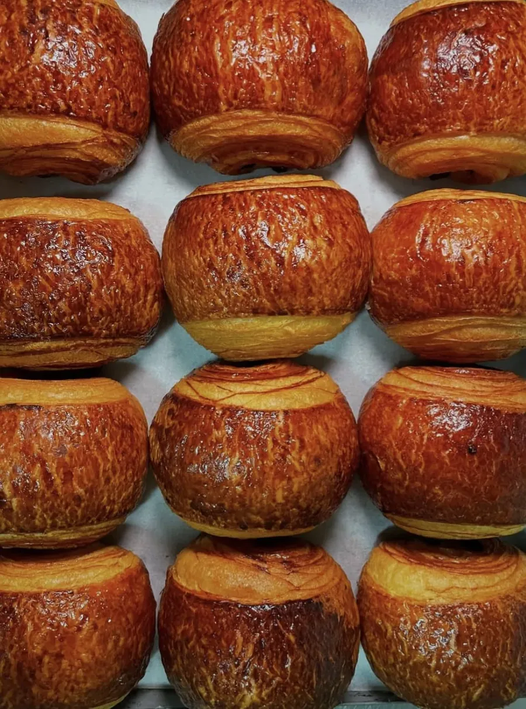
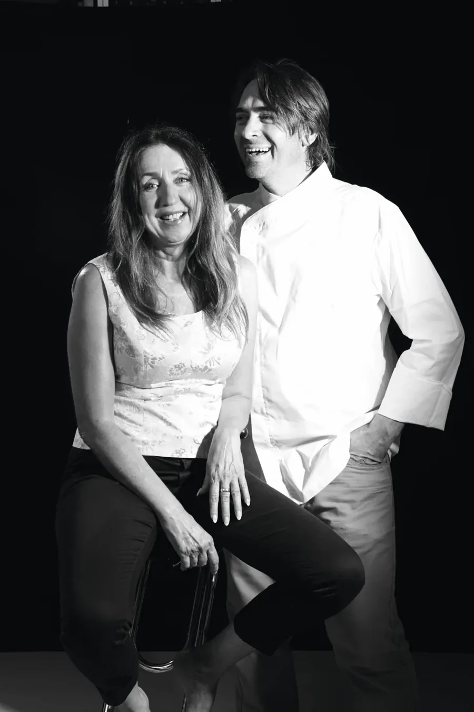
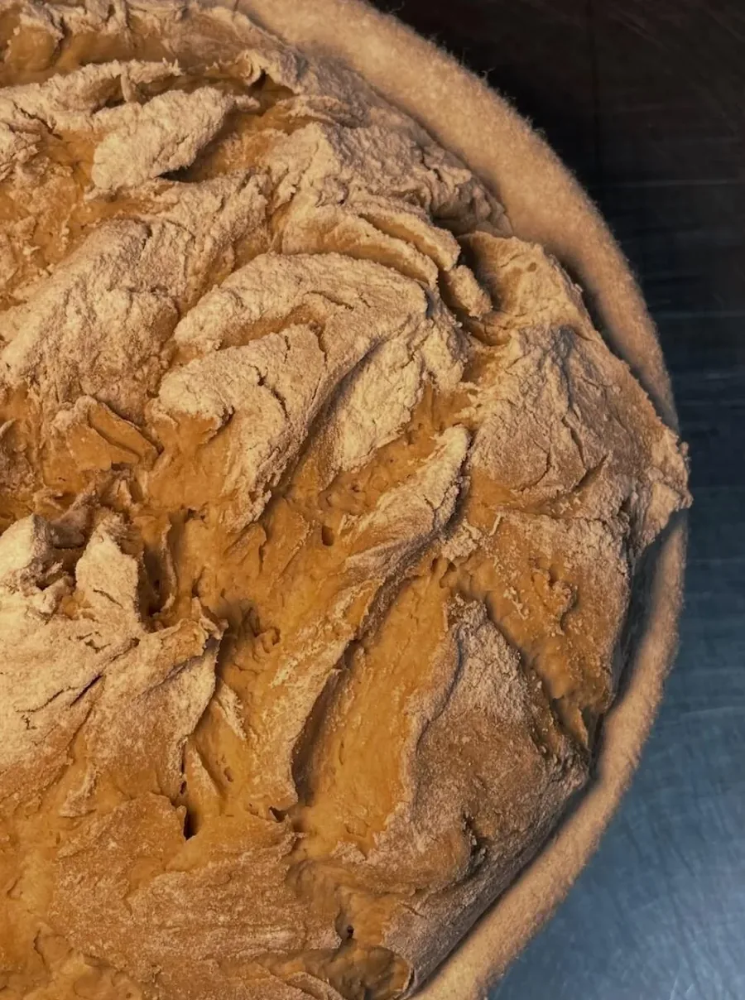
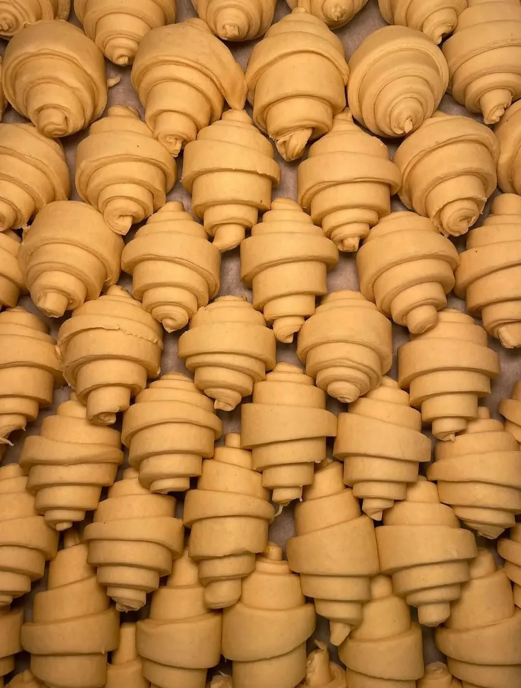
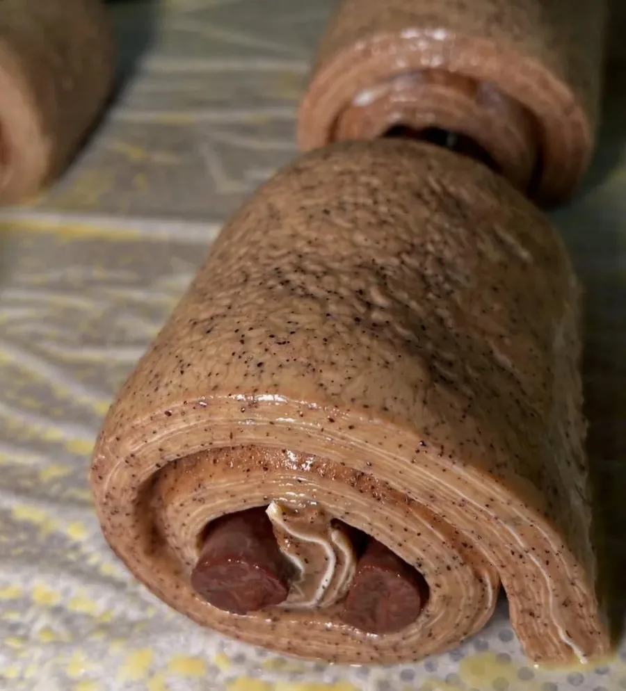
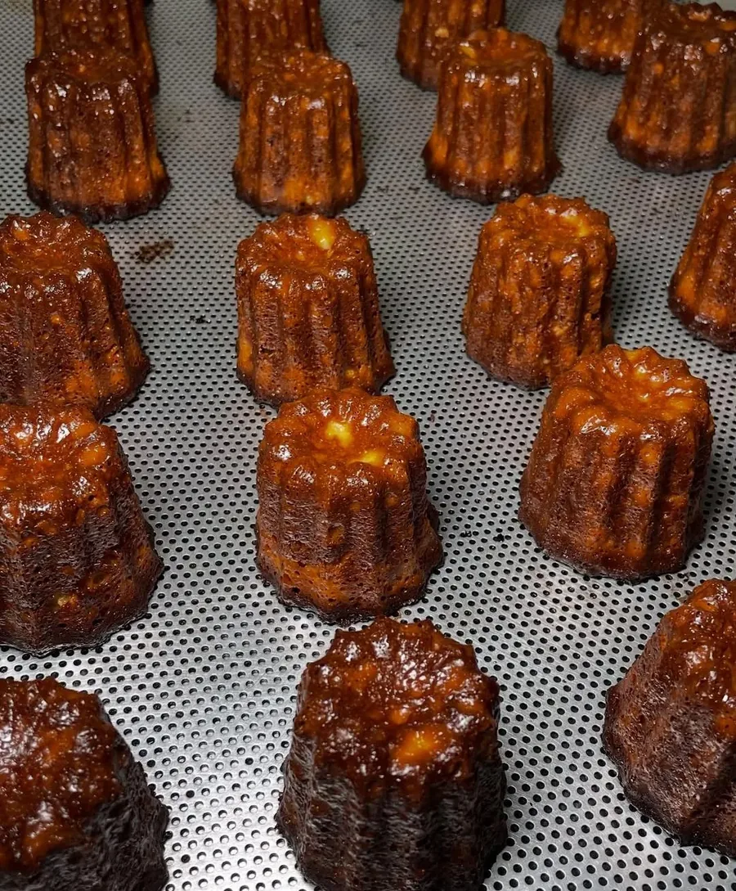
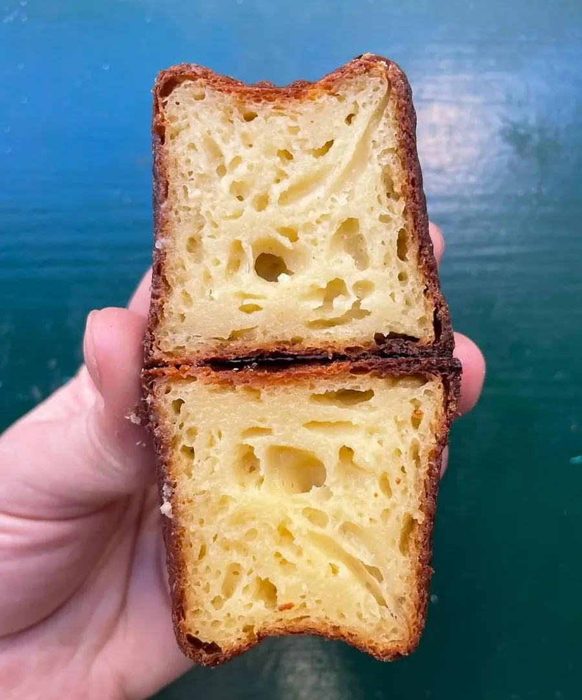
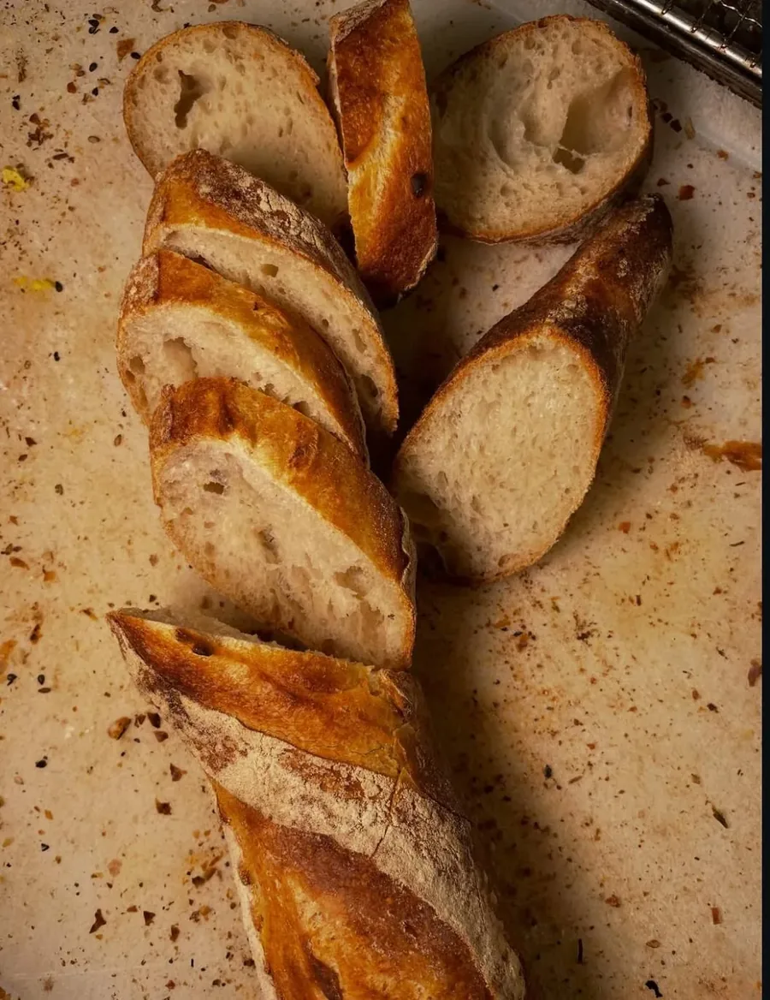
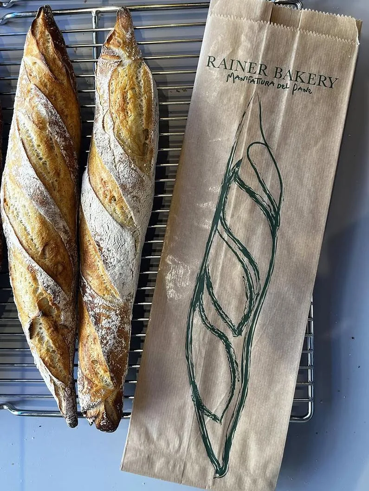
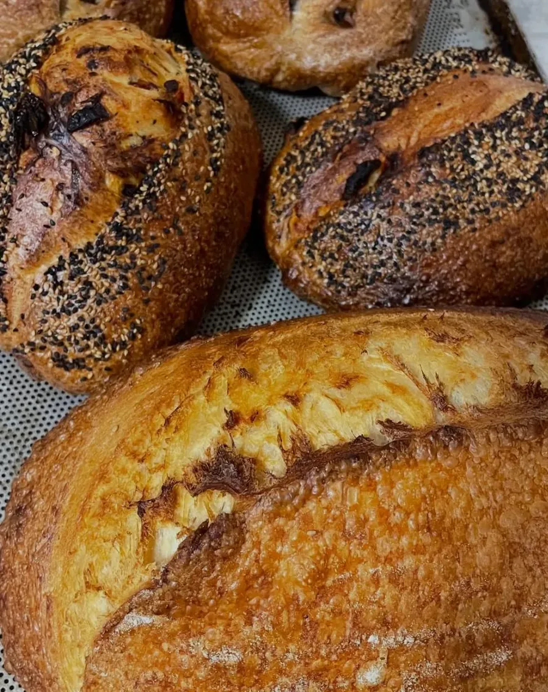

LA NOSTRA STORIA
L'arte della pasticceria austriaca nel cuore di Firenze.
Fondato nel 2011 da Rudolf Rainer e Silvia Rabito, Caffè Rainer porta nel cuore di Firenze lo spirito e la tradizione dell'omonimo, celebre locale aperto dal padre di Rudolf a Innsbruck nel 1962.
La nostra proposta nasce da una formazione rigorosa e da quindici anni di esperienza nell’alta ristorazione fiorentina. Oggi, la nostra missione è offrire un’esperienza autentica: ogni dolce è realizzato artigianalmente nel nostro laboratorio, utilizzando materie prime d’eccellenza come farine austriache macinate a pietra e burro francese di alta qualità.
Dalla classica Sachertorte allo Strudel di mele con sfoglia tirata a mano, fino a raffinate influenze di pasticceria francese: scopri un angolo di Austria nel centro storico di Firenze, dove la storia familiare incontra l’artigianalità contemporanea.

IL LABORATORIO
Fatto a mano.
Fatto a mano.
Ogni mattina.
Ogni prodotto è fatto a mano da noi. Farine selezionate, burro di qualità e lievito madre



LE NOSTRE CREAZIONI
Alcune delle nostre creazioni
Dal nostro laboratorio sforniamo ogni giorno pane a lievitazione naturale e raffinata pasticceria artigianale che unisce la tradizione di Vienna all'eleganza di Parigi.





Le nostre creazioni seguono la stagionalità dei prodotti, scrivi a @cafferainer o chiamaci a +39 055 493 2207 per controllarne la disponibilità.